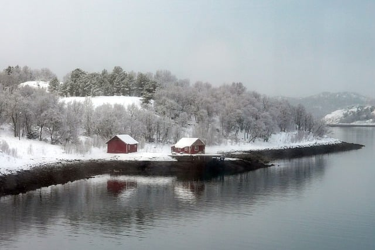
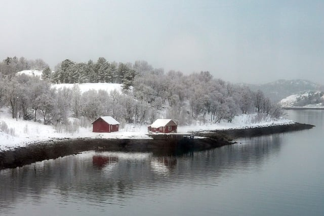

El invierno es la estación más fría del año, caracterizada por días más cortos y noches más largas, así como por temperaturas más bajas y condiciones climáticas más adversas. En muchas regiones, el invierno trae consigo la caída de nieve, creando paisajes blancos y hermosos que transforman el entorno. Esta estación es un momento de descanso para la naturaleza, con muchas plantas y árboles en reposo y la vida animal adaptándose a las condiciones invernales.
 

A pesar de las bajas temperaturas, el invierno también es una época de celebración y tradición en muchas culturas. Se celebran festividades como la Navidad y el Año Nuevo, que suelen estar acompañadas de reuniones familiares, comidas especiales y actividades festivas. En algunas regiones, el invierno es también un momento popular para practicar deportes de invierno como el esquí, el snowboard y el patinaje sobre hielo, que aprovechan las condiciones climáticas únicas de la estación.
El invierno también puede presentar desafíos, especialmente en áreas donde las temperaturas caen por debajo de cero y las nevadas son frecuentes. Las bajas temperaturas pueden representar un riesgo para la salud, especialmente para las personas mayores y los niños pequeños. Además, las condiciones invernales pueden afectar el transporte y la infraestructura, causando retrasos y ificultades en la vida cotidiana. A pesar de estos desafíos, el invierno es una estación que ofrece belleza y oportunidades únicas, invitando a las personas a disfrutar de la calidez del hogar y la compañía de sus seres queridos mientras esperan la llegada de la primavera.